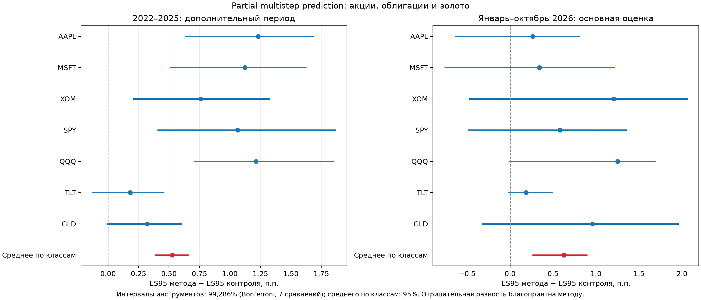
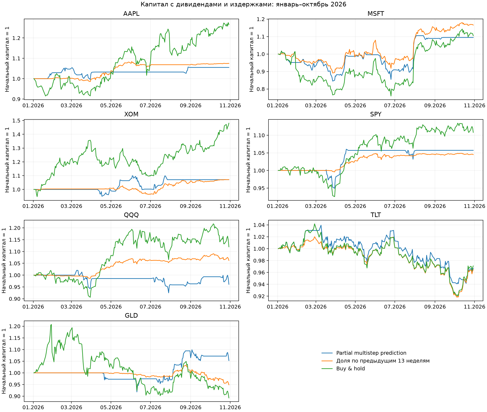

Метод Gromov–Baranov: возмущённые траектории, усреднение конечных значений и rgdbscan. Дневная торговая адаптация на Backtesting.py.
Январь–октябрь 2026: разность ES95 +0.624 п.п.; 95% интервал [+0.267; +0.892] п.п. Основная оценка использует 209 торговых сессий и равные веса трёх классов активов.
Интерактивный пример SPY · Все метрики CSV · Риск и доходность относительно других прогнозных методов · Основное сравнение CSV · Протокол · Хеши входов и кода · Проверка сохранённых расчётов
Панель зафиксирована до расчёта: AAPL, MSFT и XOM — отдельные акции; SPY и QQQ — фондовые ETF; TLT — длинные государственные облигации США; GLD — золото. Это выбранные известные сохранившиеся инструменты, а не выборка всех исторически доступных акций без survivorship bias. Нельзя переносить вывод автоматически на весь фондовый рынок.
Предыдущие криптоэксперименты уже были известны. 2022–2025 здесь — дополнительный исторический период, январь–октябрь 2026 — ранее не рассчитанный для этих инструментов holdout, но общий макроэкономический период с криптоэкспериментом. Это исследовательское расширение, не полностью независимое проспективное подтверждение. Рынки не выбирались по полученным доходностям, новый TPE на этой панели не проводился.
| period | symbol | method_return | control_return | method_es95 | control_es95 | difference | lower | upper | method_exposure | control_exposure | method_entries | inactive_pair |
|---|---|---|---|---|---|---|---|---|---|---|---|---|
| holdout | AAPL | 5.51% | 7.48% | 0.92% | 0.65% | +0.263 п.п. | -0.632 п.п. | +0.801 п.п. | 15.00% | 14.70% | 5 | False |
| holdout | MSFT | 9.47% | 16.57% | 2.59% | 2.25% | +0.340 п.п. | -0.758 п.п. | +1.214 п.п. | 50.35% | 52.11% | 7 | False |
| holdout | XOM | 7.07% | 7.10% | 2.21% | 1.00% | +1.206 п.п. | -0.469 п.п. | +2.057 п.п. | 20.00% | 20.17% | 5 | False |
| holdout | SPY | 5.71% | 4.50% | 0.96% | 0.38% | +0.581 п.п. | -0.488 п.п. | +1.349 п.п. | 15.43% | 15.32% | 2 | False |
| holdout | QQQ | -3.89% | 6.20% | 1.90% | 0.65% | +1.250 п.п. | -0.005 п.п. | +1.683 п.п. | 24.08% | 19.79% | 6 | False |
| holdout | TLT | -3.29% | -3.54% | 1.28% | 1.09% | +0.184 п.п. | -0.021 п.п. | +0.491 п.п. | 82.32% | 74.68% | 4 | False |
| holdout | GLD | 5.26% | -5.13% | 2.10% | 1.14% | +0.961 п.п. | -0.322 п.п. | +1.954 п.п. | 24.08% | 18.20% | 6 | False |
Контроль раз в неделю поддерживает долю актива, равную среднему предыдущих 13 недельных targets метода. Фактическая экспозиция у стратегий может различаться — обе доли показаны. Нулевое участие в рынке само по себе не является доказательством распознавания риска. Основной эффект — средняя разность ES по классам, не риск инвестиционного портфеля.

Каждый из пяти фондовых инструментов имеет вес 1/15, TLT и GLD — по 1/3. Bootstrap: 10 000 повторов, одни и те же календарные блоки у всех инструментов и обеих стратегий; основной блок — 10 сессий, дополнительные — 5/20. Для отдельных инструментов используются приблизительные интервалы с поправкой Bonferroni на семь сравнений. Лучшая строка не выбирается как новый рынок для торговли. Остальные сравнения описательные.
| period | sessions | block | difference | lower | upper |
|---|---|---|---|---|---|
| historical | 1003 | 5 | +0.527 п.п. | +0.403 п.п. | +0.636 п.п. |
| historical | 1003 | 10 | +0.527 п.п. | +0.387 п.п. | +0.655 п.п. |
| historical | 1003 | 20 | +0.527 п.п. | +0.367 п.п. | +0.674 п.п. |
| holdout | 209 | 5 | +0.624 п.п. | +0.297 п.п. | +0.880 п.п. |
| holdout | 209 | 10 | +0.624 п.п. | +0.267 п.п. | +0.892 п.п. |
| holdout | 209 | 20 | +0.624 п.п. | +0.264 п.п. | +0.928 п.п. |
На этой панели в 2026 точечная разность положительна на всех семи инструментах, однако каждый индивидуальный интервал с поправкой на семь сравнений включает ноль. Положительный общий интервал не означает подтверждённого ухудшения отдельно на каждом активе. Эффект также нельзя целиком приписать выбору дней входа: фактическая экспозиция у метода и сглаженного контроля различается.

Это не буквальный перенос всех настроек часовой криптостратегии. До просмотра результатов заданы 2520 предыдущих торговых сессий для обучения, прогноз на 5 сессий, решение после последнего закрытия каждой торговой недели и исполнение на следующем реальном Open. Переобучение поквартальное; текущий квартал не входит в его train. Недельное расписание учитывает праздники и короткие недели. Параметры мотивов, Wishart, радиусов и шума перенесены из BTC trial 26. Контроль L4 K10 использует геометрию статьи и ранее зафиксированные параметры её реконструкции; торговая политика в самой статье не исследовалась.
{
"transferred": {
"length": 3,
"max_gap": 3,
"r": 5,
"mu": 0.02,
"epsilon": 0.06502211399080364,
"cluster_eps": 0.008371633741976994,
"min_samples": 3,
"perturbation_variance": 5.8071705698799575e-05,
"paths": 16
},
"paper_control": {
"length": 4,
"max_gap": 10,
"r": 11,
"mu": 0.2,
"epsilon": 0.01,
"cluster_eps": 0.01,
"min_samples": 3,
"perturbation_variance": 1e-05,
"paths": 16
},
"training_sessions": 2520,
"horizon_sessions": 5,
"control_weeks": 13
}Модель прогнозирует split-adjusted цену Close, не total return. Нормировка — min–max по train, без обрезки будущих значений; будущие дивиденды модель не получает. Принятый прогноз роста более 0,3% даёт long на 95% капитала, иначе cash; без плеча и коротких позиций. Начальный капитал каждого периода — 100 000 USD, проценты на деньги равны нулю. Издержки — 15 bps с каждой стороны: одинаковая заданная модель, не измеренный spread каждого инструмента.
Снимки Yahoo Finance содержат 5503 дневные сессии с 2005 года по 16 ноября 2026. Последние ноябрьские наблюдения не входят в оценку до 1 ноября. Все даты сверены с календарём биржи. Сырые ответы сохранены с контрольными суммами; программный endpoint не имеет гарантии стабильного официального API. На исполнение идут цены с корректировкой только на сплиты; dividend-adjusted Adj Close не подставляется вместо Open.
Используются дробные доли акции в постоянных split-adjusted единицах. При пропорциональных комиссиях смена единиц сохраняет стоимость позиции и дивиденды. Проекция в raw price/quantity проверяет внутреннюю эквивалентность, но не является сверкой с независимым архивом биржевых raw quotes. Проверки искусственного будущего сплита сохраняют прогнозы, targets, капитал и процентные комиссии в пределах точности дробного исполнения.
Дивиденды начисляются отдельно держателю до Open ex-date: продавец на этом открытии получает выплату, покупатель — нет. Основная версия предполагает доступность денег в ex-date, поскольку источник не задаёт все payment dates. Дополнительная версия задерживает зачисление на 30 календарных дней: receivable входит в equity, но не доступен для покупки и сохраняется после продажи. Это проверка допущения, а не реконструкция реальных дат выплаты. Остаток cash и receivables сохранён отдельно. Итоговый капитал включает dividend ledger; в интерактивном графике PnL отдельных сделок отражает только цены и комиссии, equity включает дивиденды.
Выборочные сверки с эмитентами подтверждают три сплита Apple и выплаты до и после них. В проверенных выплатах TLT Yahoo округляет сумму до 0,001 USD на акцию, тогда как эмитент даёт больше знаков. Эта погрешность сохранена и описана; точные суммы не подменяются выборочно. Все корпоративные действия независимо не сертифицированы.
| symbol | strategy | total_return | max_drawdown | volatility | es95 | mean_exposure | entries | dividends |
|---|---|---|---|---|---|---|---|---|
| AAPL | Деньги | 0.00% | 0.00% | 0.00% | 0.00% | 0.00% | 0 | 0.00 |
| AAPL | Buy & hold | 60.14% | 31.89% | 26.85% | 3.77% | 93.99% | 1 | 2,176.77 |
| AAPL | SMA 50/200 | 4.01% | 31.89% | 20.57% | 3.27% | 59.00% | 4 | 1,165.88 |
| AAPL | Momentum 90 | -12.35% | 32.47% | 18.07% | 2.80% | 58.49% | 16 | 1,041.34 |
| AAPL | Donchian 20/10 | 10.00% | 20.41% | 13.46% | 2.17% | 39.77% | 14 | 767.71 |
| AAPL | RSI 14 | 19.13% | 21.89% | 12.76% | 1.40% | 8.71% | 7 | 0.00 |
| AAPL | Vol-target 20% | 56.55% | 27.20% | 19.97% | 2.79% | 76.79% | 105 | 1,784.71 |
| AAPL | Random Forest | 51.38% | 29.35% | 21.83% | 3.18% | 66.90% | 23 | 1,648.20 |
| AAPL | Partial multistep prediction | -11.10% | 31.61% | 20.03% | 3.26% | 32.74% | 34 | 477.12 |
| AAPL | Контроль L4 K10 из статьи | -4.36% | 30.61% | 14.72% | 2.22% | 17.61% | 23 | 218.43 |
| AAPL | Доля по предыдущим 13 неделям | 21.90% | 16.61% | 13.58% | 2.03% | 32.82% | 91 | 743.49 |
| MSFT | Деньги | 0.00% | 0.00% | 0.00% | 0.00% | 0.00% | 0 | 0.00 |
| MSFT | Buy & hold | 57.92% | 30.53% | 25.06% | 3.47% | 93.69% | 1 | 3,619.73 |
| MSFT | SMA 50/200 | 30.58% | 20.94% | 17.05% | 2.66% | 61.72% | 5 | 2,573.09 |
| MSFT | Momentum 90 | 7.73% | 26.96% | 16.15% | 2.55% | 55.60% | 10 | 2,023.48 |
| MSFT | Donchian 20/10 | 8.74% | 24.05% | 14.55% | 2.32% | 43.67% | 16 | 1,338.07 |
| MSFT | RSI 14 | 9.33% | 16.56% | 8.73% | 0.93% | 7.38% | 5 | 166.03 |
| MSFT | Vol-target 20% | 41.17% | 22.13% | 19.61% | 2.77% | 78.27% | 98 | 2,741.97 |
| MSFT | Random Forest | 17.26% | 26.45% | 21.84% | 3.26% | 70.63% | 26 | 2,155.05 |
| MSFT | Partial multistep prediction | 53.71% | 24.66% | 17.00% | 2.74% | 30.58% | 33 | 913.30 |
| MSFT | Контроль L4 K10 из статьи | 25.73% | 26.02% | 16.04% | 2.62% | 29.91% | 30 | 861.20 |
| MSFT | Доля по предыдущим 13 неделям | 41.66% | 13.96% | 11.41% | 1.62% | 29.83% | 97 | 1,184.20 |
| XOM | Деньги | 0.00% | 0.00% | 0.00% | 0.00% | 0.00% | 0 | 0.00 |
| XOM | Buy & hold | 92.14% | 19.50% | 24.11% | 3.49% | 90.32% | 1 | 20,726.49 |
| XOM | SMA 50/200 | 42.14% | 26.44% | 21.55% | 3.25% | 64.88% | 4 | 13,037.62 |
| XOM | Momentum 90 | 20.76% | 30.03% | 20.34% | 3.22% | 60.46% | 13 | 10,422.83 |
| XOM | Donchian 20/10 | -13.78% | 36.63% | 17.93% | 3.18% | 43.36% | 16 | 8,337.52 |
| XOM | RSI 14 | 34.93% | 4.54% | 6.04% | 0.39% | 5.31% | 5 | 0.00 |
| XOM | Vol-target 20% | 65.54% | 17.63% | 19.60% | 2.80% | 79.25% | 104 | 15,809.07 |
| XOM | Random Forest | 17.89% | 31.33% | 15.16% | 2.58% | 29.62% | 16 | 1,685.91 |
| XOM | Partial multistep prediction | 64.22% | 17.61% | 13.59% | 2.02% | 27.73% | 35 | 5,970.99 |
| XOM | Контроль L4 K10 из статьи | -5.95% | 23.23% | 12.19% | 2.11% | 26.19% | 30 | 4,064.56 |
| XOM | Доля по предыдущим 13 неделям | 31.39% | 7.10% | 8.01% | 1.26% | 27.77% | 102 | 4,628.92 |
| SPY | Деньги | 0.00% | 0.00% | 0.00% | 0.00% | 0.00% | 0 | 0.00 |
| SPY | Buy & hold | 51.26% | 22.19% | 16.73% | 2.43% | 92.57% | 1 | 5,596.75 |
| SPY | SMA 50/200 | 36.57% | 17.70% | 12.71% | 1.90% | 68.32% | 3 | 4,432.09 |
| SPY | Momentum 90 | 28.00% | 15.98% | 10.53% | 1.66% | 65.58% | 10 | 3,052.24 |
| SPY | Donchian 20/10 | 21.55% | 13.62% | 9.48% | 1.52% | 51.56% | 19 | 3,176.61 |
| SPY | RSI 14 | 9.87% | 13.02% | 8.56% | 0.86% | 6.53% | 5 | 320.20 |
| SPY | Vol-target 20% | 42.03% | 21.96% | 15.38% | 2.25% | 89.82% | 96 | 5,391.02 |
| SPY | Random Forest | 7.36% | 22.50% | 13.35% | 2.13% | 33.72% | 22 | 1,863.88 |
| SPY | Partial multistep prediction | 9.48% | 21.62% | 12.17% | 1.92% | 24.42% | 21 | 668.58 |
| SPY | Контроль L4 K10 из статьи | -13.76% | 25.49% | 9.88% | 1.76% | 24.69% | 21 | 1,789.77 |
| SPY | Доля по предыдущим 13 неделям | 23.13% | 6.98% | 5.62% | 0.85% | 24.08% | 77 | 1,567.64 |
| QQQ | Деньги | 0.00% | 0.00% | 0.00% | 0.00% | 0.00% | 0 | 0.00 |
| QQQ | Buy & hold | 64.19% | 30.80% | 22.19% | 3.18% | 93.77% | 1 | 2,609.97 |
| QQQ | SMA 50/200 | 44.33% | 21.90% | 16.26% | 2.54% | 65.72% | 3 | 1,913.72 |
| QQQ | Momentum 90 | 64.51% | 12.99% | 13.53% | 2.11% | 63.19% | 6 | 2,136.44 |
| QQQ | Donchian 20/10 | 35.90% | 17.13% | 12.21% | 1.97% | 48.77% | 16 | 1,533.15 |
| QQQ | RSI 14 | 3.70% | 14.90% | 10.46% | 1.27% | 7.48% | 4 | 149.00 |
| QQQ | Vol-target 20% | 59.14% | 24.95% | 17.97% | 2.56% | 83.45% | 93 | 2,455.83 |
| QQQ | Random Forest | 4.51% | 27.63% | 18.84% | 3.02% | 48.35% | 28 | 1,152.63 |
| QQQ | Partial multistep prediction | -24.78% | 39.48% | 17.05% | 2.88% | 34.39% | 26 | 947.21 |
| QQQ | Контроль L4 K10 из статьи | 9.57% | 18.15% | 15.29% | 2.48% | 28.11% | 25 | 780.62 |
| QQQ | Доля по предыдущим 13 неделям | 26.11% | 16.30% | 11.04% | 1.66% | 33.93% | 90 | 937.28 |
| TLT | Деньги | 0.00% | 0.00% | 0.00% | 0.00% | 0.00% | 0 | 0.00 |
| TLT | Buy & hold | -27.25% | 37.17% | 14.72% | 2.00% | 87.13% | 1 | 9,117.46 |
| TLT | SMA 50/200 | -3.31% | 10.20% | 5.76% | 1.02% | 21.60% | 5 | 3,227.30 |
| TLT | Momentum 90 | -18.66% | 24.22% | 7.13% | 1.27% | 27.46% | 13 | 2,992.68 |
| TLT | Donchian 20/10 | -14.05% | 22.26% | 7.76% | 1.36% | 26.13% | 18 | 3,310.07 |
| TLT | RSI 14 | -2.56% | 12.38% | 7.57% | 1.29% | 17.87% | 8 | 2,402.28 |
| TLT | Vol-target 20% | -28.31% | 38.13% | 15.50% | 2.09% | 93.67% | 133 | 9,766.23 |
| TLT | Random Forest | -3.12% | 6.99% | 3.74% | 0.50% | 5.02% | 10 | 142.90 |
| TLT | Partial multistep prediction | -11.62% | 23.35% | 12.80% | 1.82% | 65.47% | 30 | 9,172.81 |
| TLT | Контроль L4 K10 из статьи | -19.94% | 30.08% | 10.22% | 1.65% | 43.50% | 39 | 5,223.35 |
| TLT | Доля по предыдущим 13 неделям | -22.14% | 30.49% | 11.35% | 1.64% | 66.83% | 119 | 7,627.85 |
| GLD | Деньги | 0.00% | 0.00% | 0.00% | 0.00% | 0.00% | 0 | 0.00 |
| GLD | Buy & hold | 130.58% | 20.11% | 15.44% | 2.10% | 95.36% | 1 | 0.00 |
| GLD | SMA 50/200 | 82.70% | 19.44% | 14.09% | 2.07% | 76.64% | 4 | 0.00 |
| GLD | Momentum 90 | 127.62% | 13.87% | 14.34% | 2.05% | 78.91% | 5 | 0.00 |
| GLD | Donchian 20/10 | 29.48% | 13.26% | 11.47% | 1.85% | 45.06% | 22 | 0.00 |
| GLD | RSI 14 | 7.83% | 3.85% | 3.06% | 0.23% | 4.17% | 4 | 0.00 |
| GLD | Vol-target 20% | 123.08% | 20.08% | 14.89% | 2.02% | 92.84% | 87 | 0.00 |
| GLD | Random Forest | 7.95% | 8.33% | 5.31% | 0.80% | 12.22% | 18 | 0.00 |
| GLD | Partial multistep prediction | -5.05% | 12.33% | 5.25% | 0.92% | 14.58% | 14 | 0.00 |
| GLD | Контроль L4 K10 из статьи | 9.65% | 6.97% | 4.80% | 0.67% | 12.31% | 17 | 0.00 |
| GLD | Доля по предыдущим 13 неделям | 9.59% | 6.91% | 4.33% | 0.60% | 16.09% | 44 | 0.00 |
| symbol | strategy | total_return | max_drawdown | volatility | es95 | mean_exposure | entries | dividends |
|---|---|---|---|---|---|---|---|---|
| AAPL | Деньги | 0.00% | 0.00% | 0.00% | 0.00% | 0.00% | 0 | 0.00 |
| AAPL | Buy & hold | 26.62% | 12.14% | 24.44% | 3.54% | 94.29% | 1 | 280.40 |
| AAPL | SMA 50/200 | 26.62% | 12.14% | 24.44% | 3.54% | 94.29% | 1 | 280.40 |
| AAPL | Momentum 90 | 13.36% | 12.13% | 22.21% | 3.49% | 74.78% | 3 | 260.47 |
| AAPL | Donchian 20/10 | -0.41% | 14.38% | 18.63% | 3.01% | 55.08% | 5 | 82.44 |
| AAPL | RSI 14 | 6.66% | 5.22% | 7.33% | 0.60% | 8.64% | 1 | 95.17 |
| AAPL | Vol-target 20% | 20.11% | 11.97% | 20.63% | 3.10% | 79.03% | 22 | 223.14 |
| AAPL | Random Forest | 16.51% | 8.88% | 18.36% | 2.60% | 59.14% | 8 | 181.65 |
| AAPL | Partial multistep prediction | 5.51% | 5.51% | 6.56% | 0.92% | 15.00% | 5 | 0.00 |
| AAPL | Контроль L4 K10 из статьи | -5.73% | 10.17% | 8.23% | 1.56% | 17.27% | 4 | 0.00 |
| AAPL | Доля по предыдущим 13 неделям | 7.48% | 2.50% | 5.01% | 0.65% | 14.70% | 13 | 43.90 |
| MSFT | Деньги | 0.00% | 0.00% | 0.00% | 0.00% | 0.00% | 0 | 0.00 |
| MSFT | Buy & hold | 10.49% | 25.34% | 32.75% | 4.02% | 93.35% | 1 | 546.26 |
| MSFT | SMA 50/200 | 3.76% | 7.74% | 10.18% | 1.63% | 23.67% | 2 | 0.00 |
| MSFT | Momentum 90 | 9.55% | 4.84% | 11.50% | 1.77% | 30.96% | 2 | 181.10 |
| MSFT | Donchian 20/10 | 10.83% | 20.36% | 23.57% | 2.75% | 42.54% | 3 | 184.70 |
| MSFT | RSI 14 | -0.88% | 20.32% | 17.33% | 2.80% | 30.38% | 3 | 197.39 |
| MSFT | Vol-target 20% | 7.27% | 21.29% | 24.05% | 3.06% | 65.68% | 21 | 305.14 |
| MSFT | Random Forest | 0.44% | 24.74% | 23.76% | 3.46% | 64.26% | 7 | 348.58 |
| MSFT | Partial multistep prediction | 9.47% | 16.95% | 24.73% | 2.59% | 50.35% | 7 | 397.54 |
| MSFT | Контроль L4 K10 из статьи | 13.21% | 20.79% | 26.32% | 3.06% | 40.89% | 12 | 394.57 |
| MSFT | Доля по предыдущим 13 неделям | 16.57% | 14.92% | 19.59% | 2.25% | 52.11% | 24 | 344.70 |
| XOM | Деньги | 0.00% | 0.00% | 0.00% | 0.00% | 0.00% | 0 | 0.00 |
| XOM | Buy & hold | 48.03% | 19.20% | 26.10% | 3.63% | 93.94% | 1 | 2,340.95 |
| XOM | SMA 50/200 | 48.03% | 19.20% | 26.10% | 3.63% | 93.94% | 1 | 2,340.95 |
| XOM | Momentum 90 | 25.27% | 21.57% | 23.90% | 3.64% | 74.18% | 2 | 1,560.63 |
| XOM | Donchian 20/10 | 29.56% | 16.43% | 20.11% | 3.01% | 52.39% | 4 | 1,544.17 |
| XOM | RSI 14 | 0.00% | 0.00% | 0.00% | 0.00% | 0.00% | 0 | 0.00 |
| XOM | Vol-target 20% | 40.26% | 14.76% | 20.70% | 2.80% | 73.62% | 22 | 1,742.41 |
| XOM | Random Forest | 24.69% | 4.96% | 11.53% | 1.64% | 26.37% | 7 | 686.20 |
| XOM | Partial multistep prediction | 7.07% | 9.18% | 12.78% | 2.21% | 20.00% | 5 | 660.63 |
| XOM | Контроль L4 K10 из статьи | -7.82% | 13.62% | 10.05% | 1.97% | 10.90% | 3 | 0.00 |
| XOM | Доля по предыдущим 13 неделям | 7.10% | 6.03% | 7.28% | 1.00% | 20.17% | 17 | 458.63 |
| SPY | Деньги | 0.00% | 0.00% | 0.00% | 0.00% | 0.00% | 0 | 0.00 |
| SPY | Buy & hold | 10.81% | 8.44% | 12.22% | 1.60% | 94.04% | 1 | 772.36 |
| SPY | SMA 50/200 | 10.81% | 8.44% | 12.22% | 1.60% | 94.04% | 1 | 772.36 |
| SPY | Momentum 90 | 6.91% | 4.28% | 10.89% | 1.47% | 83.23% | 3 | 505.98 |
| SPY | Donchian 20/10 | 2.01% | 4.94% | 7.85% | 1.33% | 43.67% | 4 | 255.48 |
| SPY | RSI 14 | 2.50% | 3.90% | 5.03% | 0.45% | 6.36% | 1 | 0.00 |
| SPY | Vol-target 20% | 10.85% | 8.46% | 12.23% | 1.60% | 94.10% | 21 | 772.52 |
| SPY | Random Forest | 1.78% | 4.25% | 6.72% | 1.05% | 28.17% | 8 | 0.00 |
| SPY | Partial multistep prediction | 5.71% | 5.24% | 6.69% | 0.96% | 15.43% | 2 | 255.03 |
| SPY | Контроль L4 K10 из статьи | 0.09% | 4.03% | 6.14% | 1.04% | 12.73% | 4 | 255.80 |
| SPY | Доля по предыдущим 13 неделям | 4.50% | 1.66% | 2.73% | 0.38% | 15.32% | 13 | 135.23 |
| QQQ | Деньги | 0.00% | 0.00% | 0.00% | 0.00% | 0.00% | 0 | 0.00 |
| QQQ | Buy & hold | 11.98% | 11.14% | 19.72% | 2.49% | 94.33% | 1 | 351.82 |
| QQQ | SMA 50/200 | 11.98% | 11.14% | 19.72% | 2.49% | 94.33% | 1 | 351.82 |
| QQQ | Momentum 90 | 2.46% | 10.72% | 17.75% | 2.38% | 77.49% | 3 | 216.05 |
| QQQ | Donchian 20/10 | 7.99% | 10.08% | 10.85% | 1.78% | 31.46% | 4 | 0.00 |
| QQQ | RSI 14 | 6.74% | 1.66% | 5.30% | 0.19% | 4.10% | 1 | 0.00 |
| QQQ | Vol-target 20% | 12.65% | 11.17% | 18.39% | 2.41% | 89.02% | 21 | 335.74 |
| QQQ | Random Forest | -0.21% | 11.15% | 14.38% | 2.05% | 60.94% | 4 | 216.27 |
| QQQ | Partial multistep prediction | -3.89% | 9.33% | 10.65% | 1.90% | 24.08% | 6 | 214.56 |
| QQQ | Контроль L4 K10 из статьи | -6.05% | 14.05% | 10.77% | 1.79% | 35.44% | 5 | 206.55 |
| QQQ | Доля по предыдущим 13 неделям | 6.20% | 2.61% | 4.70% | 0.65% | 19.79% | 20 | 67.84 |
| TLT | Деньги | 0.00% | 0.00% | 0.00% | 0.00% | 0.00% | 0 | 0.00 |
| TLT | Buy & hold | -2.90% | 11.63% | 9.21% | 1.27% | 92.39% | 1 | 3,159.75 |
| TLT | SMA 50/200 | -4.19% | 5.49% | 4.26% | 0.82% | 17.71% | 2 | 361.24 |
| TLT | Momentum 90 | -1.56% | 2.65% | 2.18% | 0.34% | 6.36% | 2 | 0.00 |
| TLT | Donchian 20/10 | -2.24% | 3.86% | 3.09% | 0.57% | 14.08% | 3 | 662.50 |
| TLT | RSI 14 | 2.70% | 0.89% | 2.25% | 0.16% | 6.37% | 2 | 373.47 |
| TLT | Vol-target 20% | -2.95% | 11.87% | 9.39% | 1.29% | 94.03% | 25 | 3,209.13 |
| TLT | Random Forest | -1.66% | 1.66% | 1.24% | 0.16% | 2.27% | 1 | 0.00 |
| TLT | Partial multistep prediction | -3.29% | 9.49% | 8.97% | 1.28% | 82.32% | 4 | 2,530.22 |
| TLT | Контроль L4 K10 из статьи | -3.86% | 5.56% | 6.36% | 1.07% | 39.47% | 4 | 1,440.97 |
| TLT | Доля по предыдущим 13 неделям | -3.54% | 9.99% | 7.69% | 1.09% | 74.68% | 26 | 2,606.79 |
| GLD | Деньги | 0.00% | 0.00% | 0.00% | 0.00% | 0.00% | 0 | 0.00 |
| GLD | Buy & hold | -10.76% | 26.09% | 28.46% | 4.18% | 94.14% | 1 | 0.00 |
| GLD | SMA 50/200 | -6.39% | 25.13% | 24.85% | 4.10% | 56.50% | 1 | 0.00 |
| GLD | Momentum 90 | 1.76% | 18.41% | 22.93% | 3.90% | 44.26% | 1 | 0.00 |
| GLD | Donchian 20/10 | -4.98% | 22.46% | 22.05% | 3.87% | 37.85% | 3 | 0.00 |
| GLD | RSI 14 | -0.13% | 9.10% | 11.18% | 1.98% | 19.06% | 2 | 0.00 |
| GLD | Vol-target 20% | -6.19% | 22.00% | 22.20% | 3.32% | 72.55% | 20 | 0.00 |
| GLD | Random Forest | -16.71% | 19.32% | 19.41% | 3.07% | 63.00% | 5 | 0.00 |
| GLD | Partial multistep prediction | 5.26% | 8.20% | 13.18% | 2.10% | 24.08% | 6 | 0.00 |
| GLD | Контроль L4 K10 из статьи | 0.67% | 5.85% | 9.19% | 1.59% | 17.72% | 2 | 0.00 |
| GLD | Доля по предыдущим 13 неделям | -5.13% | 8.13% | 6.21% | 1.14% | 18.20% | 19 | 0.00 |
ES95 — средняя потеря в худших ceil(5% × n) сессиях, ограниченная снизу нулём. Выходные и праздники не добавляются как нулевые доходности. Волатильность годовая, множитель √252; просадка по закрытиям, без внутридневных минимумов. Поле cagr в CSV — годовая экстраполяция на условные 252 сессии. Доходность приведена после издержек и с дивидендами, без налогов и процентов на cash. Технические стратегии и Random Forest используют фиксированные настройки; их возможные лучшие гиперпараметры здесь не ищутся.
| symbol | period | decisions | accepted | outside_training_range |
|---|---|---|---|---|
| AAPL | historical | 208 | 171 | 0.202 |
| AAPL | holdout | 44 | 32 | 0.477 |
| MSFT | historical | 208 | 170 | 0.240 |
| MSFT | holdout | 44 | 43 | 0.023 |
| XOM | historical | 208 | 196 | 0.120 |
| XOM | holdout | 44 | 24 | 0.318 |
| SPY | historical | 208 | 167 | 0.351 |
| SPY | holdout | 44 | 34 | 0.636 |
| QQQ | historical | 208 | 173 | 0.293 |
| QQQ | holdout | 44 | 34 | 0.341 |
| TLT | historical | 208 | 196 | 0.087 |
| TLT | holdout | 44 | 42 | 0.250 |
| GLD | historical | 208 | 130 | 0.361 |
| GLD | holdout | 44 | 27 | 0.227 |
Разности ES95 ниже — точечные оценки, не новые независимые проверки гипотезы. Параметры и основной результат не выбираются по лучшему seed или стоимости.
| period | costs_bps | extra_delay_sessions | dividend_delay_days | difference |
|---|---|---|---|---|
| historical | 0 | 0 | 0 | +0.513 п.п. |
| historical | 5 | 0 | 0 | +0.518 п.п. |
| historical | 15 | 0 | 30 | +0.527 п.п. |
| historical | 15 | 1 | 0 | +0.568 п.п. |
| historical | 30 | 0 | 0 | +0.544 п.п. |
| holdout | 0 | 0 | 0 | +0.612 п.п. |
| holdout | 5 | 0 | 0 | +0.616 п.п. |
| holdout | 15 | 0 | 30 | +0.624 п.п. |
| holdout | 15 | 1 | 0 | +0.564 п.п. |
| holdout | 30 | 0 | 0 | +0.640 п.п. |
| period | seed | difference |
|---|---|---|
| historical | 7 | +0.570 п.п. |
| historical | 123 | +0.528 п.п. |
| holdout | 7 | +0.592 п.п. |
| holdout | 123 | +0.620 п.п. |
Все метрики чувствительности · Seed-проверки · Метрики по годам
Выполнены 154 основных бэк-теста, 140 проверок условий и 56 seed-проверок. Все 350 расчётов повторно проверены по сохранённым файлам: Open исполнения, комиссии, price PnL, право на дивиденд, доступные деньги, receivables, дневные доходности и риск. Даты обучения и хеши данных проверены для 8512 прогнозных origins. Записи частичных закрытий не являются независимыми статистическими наблюдениями.
Запуск в отдельной копии проекта восстановил данные из архивов и повторил все бэк-тесты из сохранённых прогнозных кэшей: 2464 числовых CSV-файла совпали точно. Исправление переносимости путей в хеш-манифесте не изменило численные результаты. Общая проверка включает 92 пройденных теста и read-only рецензирование GPT Astra.
bash research/trading/noncrypto/reproduce.sh
Команда восстанавливает точный сохранённый snapshot, затем повторяет расчёт и проверку. Кэши прогнозов и metadata сохраняются; численные модели можно восстановить. Изменение данных или численного кода после freeze останавливает прежний эксперимент. Все отрицательные и неопределённые результаты остаются в отчёте.